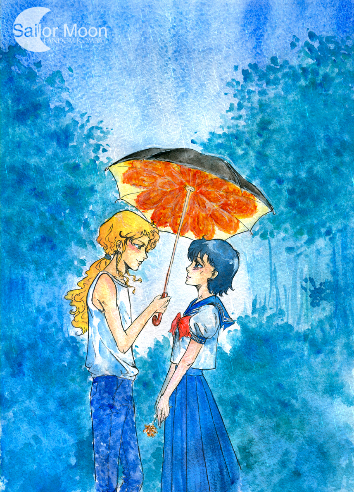

Bishoujo Senshi
Sailormoon is the property of Naoko Takeuchi, Kodanshi Comics, and Toei Animation.
Рыжий и пушистый
В парке под зонтом
Уже месяц вечерами не обойтись без зонтика, иначе рискуешь промокнуть насквозь - в Токио сезон дождей. Странное явление для города, который расположен далеко от тропиков, но когда это повторяется не первый год – поневоле привыкаешь и к таким чудесам природы.
Для сейлор воинов в этом нет никакого чуда, есть только опасения – близится тот день, когда с планетой случится страшное. Тогда не за горами и тридцатое тысячелетие, эпоха возрожденного Хрустального Токио.
И там точно не будет дождей, таких вот затяжных, окрашивающих и город, и сердца в выцветшие оттенки серого, думает Ами, возвращаясь с курсов. Она не любит дождь, хотя вода и является ее стихией. От дождя всегда тяжело на душе: дождь размывает дороги между людьми, заставляет прятаться каждого под своим зонтом, дождь рушит то, что было построено и стирает еще непрочные линии будущих отношений.
Почему-то все самое плохое происходит с ней в тот момент, когда за окном пелена дождя – сначала ушел отец, потом Рио… Письмо от него Ами получила тоже в дождливый день, и долго стояла на балконе – так плакать получалось легче. Ведь не знаешь толком, где твои слезы, а где холодные капли дождя. И хотя произошло то, что должно было случиться (ведь все девочки знали, с кем свяжут судьбы в тридцатом веке), это был несильный, но удар.
А сейчас вот опять – дождь и ни малейшей веры в лучшее. Ами тихонько вздохнула и подняла над головой портфель, пытаясь защититься от холодных капель. Под зонтом она чувствовала себя еще более одинокой, да и дорога до дома шла через парк, а там со всех сторон нависают деревья с раскидистыми кронами, если и вымокнешь, то несильно.
В парке хорошо - мерцают фонари, шумит листва, лужи на едва освещенных пятнах асфальта как маленькие черные дыры, и будто нет больше ничего вокруг.
Когда по аллее вдруг внезапно разносится запах сакуры, а под ноги Ами летят розовые лепестки, она замирает на месте, а рука тянется в карман – за жезлом перевоплощения.
Но Зойсайт, возникший из неоткуда, не кажется ей сейчас опасным. Он все еще не отвык от некоторых пафосных жестов, присущих ему в прошлом, и теперь выглядит вовсе не воинственно, а смешно. Ами прыскает в ладошку и с улыбкой разглядывает Лорда.
– Чертов дождь! – искренне ругается Зой, выбираясь из лужи. Рыжие кончики волос моментально завиваются от влажности, и он очень нелепо смотрится в мундире, теряя весь свой парадный вид. – Почему, как я здесь не появлюсь, всегда мокро? – жеманно начинает он, но тут же замолкает. – Глупый у меня вид, да?
– Да, – кивает Ами и признается совершенно серьезно. – Ты меня напугал, я думала – новый враг. Не делай так больше, пожалуйста.
– Не буду, – заверяет Зой, отряхиваясь. – С такой погодой эффектное появление совсем теряет смысл.
Он одним взмахом руки меняет одежду, теперь на нем белая свободная футболка и синие джинсы. Только резинка, стягивающая волосы, остается прежней. Да и выражение лица – насмешливое, а в зеленых глазах спрятались искорки ехидства. Ами думает, что вот именно в эту минуту Зой настоящий: слегка обиженный и раздосадованный, но искренний в своих действиях. Дождь смывает маску, настолько хорошо приставшую к нему, что стороннему человеку кажется, будто он и есть такой. Но Ами знает – это неправда. Знает и Зой, только не хочет в этом признаваться, есть в нем что-то ребячливое.
– Что ты тут делаешь? – вежливо интересуется Ами, надеясь, что появление Зоя никак не связано с черной полосой в ее жизни. Хватит с нее и непрекращающегося дождя. Она слишком подавлена, чтобы слышать новости о новых врагах солнечной системы.
– Хочу тебя развеселить, – хмыкает Зой. – Только не думай, что я делаю это потому что так сказали Принцесса или Принц. Я сам захотел.
– А они сказали? – голос выдает волнение. Ну вот, не смогла скрыть от Усаги свое состояние, значит, нужно лучше работать над эмоциями, – расстроенно отмечает она про себя.
– Забудь, – машет рукой Зой.
Он так близко, что Ами чувствует запах его духов – пряный, терпкий аромат дурманит голову, и когда она на мгновение закрывает глаза, чтобы собраться с силами, а потом открывает их, то замечает, что что-то неуловимо изменилось.
– Дождь прекратился? – спрашивает она и, подняв голову к небу, замечает, что Зойсайт держит над ними зонт.
– Как тебе? – спрашивает Зой с некоторым оттенком хвастовства. – Могу еще вот так сделать.
И в его руке появляется небольшой букет нежно-оранжевых цветов. Ами удивленно смотрит на них – последний раз цветы дарил ей Рио, но как же давно это было!
Она несмело берет букет из горячих ладоней Зойсайта и улыбается. Все же, как немного ей порой надо, чтобы приободриться и снова поверить в себя и в окружающий мир.
– Дождь скоро закончится, – уверенно говорит Зой. – Мы еще погуляем вместе под радугой, Меркурий. А пока придется подождать.
И Ами верит его словам. Верит, что в будущем все будет иначе, и если они с Зоем не станут ближе, то наверняка останутся приятелями. А с одиночеством она справится; конечно же, справится, ведь рядом будут ее друзья.

Автор рисунка April Ame